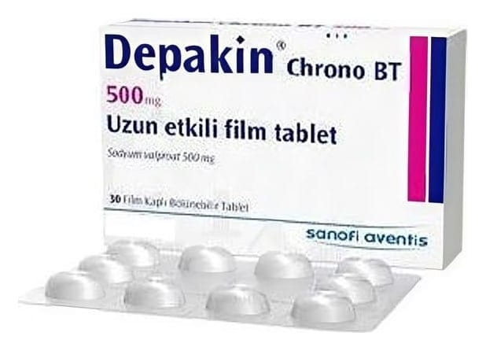

Depakin Chrono Bt 500 mg Uzun Etkılı Film Tablet, 30 Adet

Ne için kullanılır
KT · Bölüm 1• DEPAKİN, antiepileptikler (epilepsi tedavisinde kullanılan ilaçlar) adı verilen bir ilaç grubuna dahildir. • DEPAKİN, 500 mg sodyum valproat aktivitesine eşdeğer 333 mg sodyum valproat ve 145 mg valproik asit içerir. Sodyum valproat beyin üzerinde sakinleştirici etkiye sahiptir. • DEPAKİN, köşeleri yuvarlatılmış dikdörtgen şeklinde, beyaz, çentikli, 30 adet bölünebilir film tablet içeren blister ambalajlarda kullanıma sunulmuştur. • DEPAKİN, epilepsi (sara) hastalığının tedavisinde kullanılır. Birçok epilepsi türünün tedavisinde etkilidir. • DEPAKİN, bipolar bozukluklara (ruhsal durumdaki zıt yönlü değişiklikler) bağlı maninin (taşkınlık nöbeti) tedavisinde ve tedaviye cevap veren hastalarda sürdürüm tedavisi olarak kullanılabilir. • DEPAKİN Chrono BT 500 mg, erişkinlerin ve 6 yaşın üzerindeki ağırlığı en az 17 kg olan çocukların kullanımı içindir.